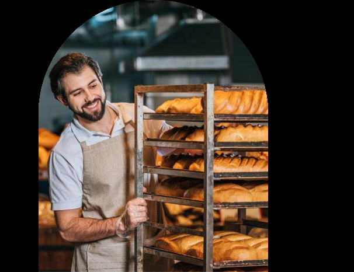

Настя
Привіт, я Настя!
Вже 10 років, я свтілюю у життя цікаві та смачні ідеї.
Я випічу для вас найсмачніщі вироби!
shop bakery — це пекарня, яка взяла все найкраще, і зберегла смак традиційної випічки та натуральність інгредієнтів.
Ми працюємо як найвідоміші мережі— 5 хвилин і замовлення готове. А ще у наших пекарень стильний дизайн та висока якість обслуговування!

Привіт, я Настя!
Вже 10 років, я свтілюю у життя цікаві та смачні ідеї.
Я випічу для вас найсмачніщі вироби!
Привіт, я Влад!
Мій кодитерський стаж вже 18 років. SHOP BEKERY - це наша любов, з якою ми ділимось кожен раз з Вами через нашу випічку!
Я зроблю для вас унікальну начинку на будь який смак!
Площа: до 120 м2 Меню: розширене меню Штат: 2 продавці-касири, 2 пекарі, 2 помічники пекаря, 2 офіціанти-різнороби Посадкові місця: є
Площа: до 25 м2 Меню: найпопулярніші позиції меню Штат: 2 продавці-касири, 2 пекарі, 1 помічник пекаря Посадкові місця: відсутні
Площа: до 15 м2 Меню: найпопулярніші позиції меню Штат: 1 продавець, 1 пекар, 1 помічник пекаря Посадкові місця: відсутні
Заповни форму, щоб ми звʼязались з тобою!